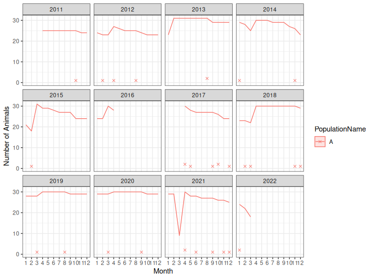
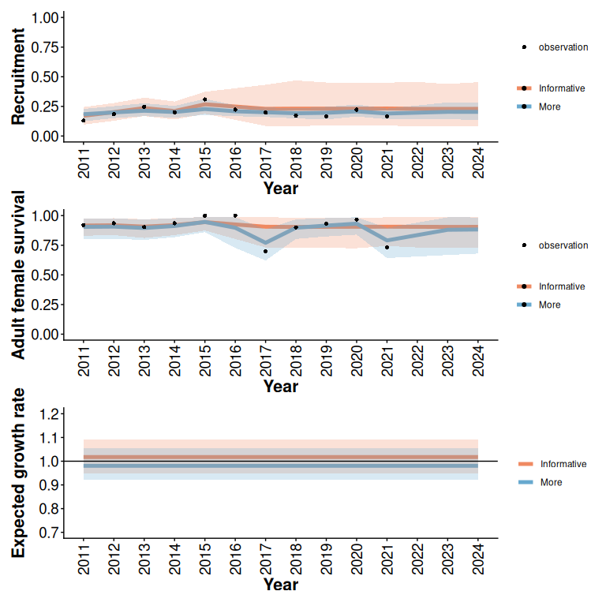
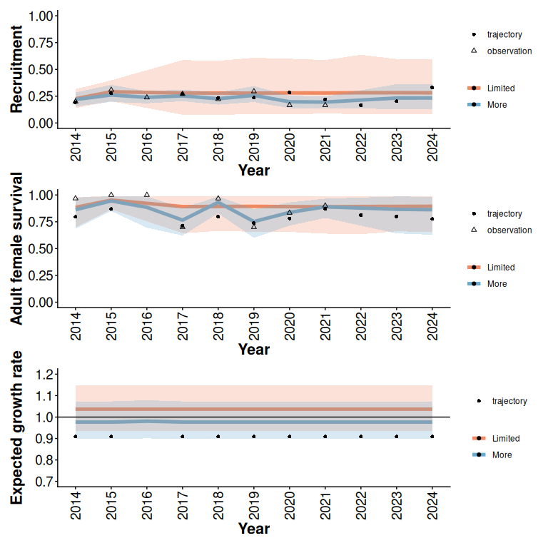
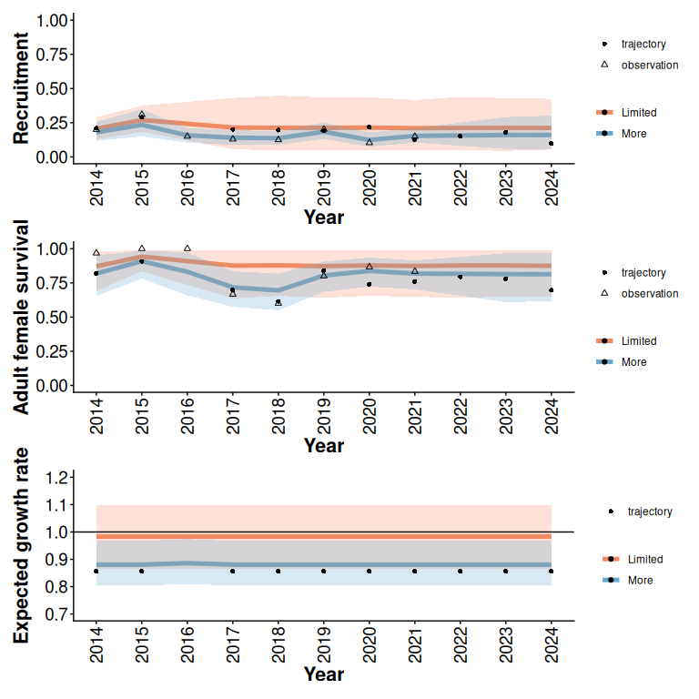

Simulation of monitoring scenarios informed by local data
Source:vignettes/combine-observed-simulated.Rmd
combine-observed-simulated.Rmd0.1 Examples of initial Bayesian models informed by local data and national-demographic disturbance relationships
We simulate monitoring scenarios informed by example data from the bboudata::bbousurv_a and bboudata::bbourecruit_a data sets:
- Informative local data: Observations from 2010 to 2016.
- Limited local data: Observations from 2014 to 2016.
To examine and compare predictions for unobserved years (2018 to 2021) we add missing data.
Our starting points for analysis of monitoring scenarios are Bayesian Beta models informed by local data and prior knowledge of national demographic-disturbance relationships. See compare vignette for details. We examine the influence of prior information from national-demographic disturbance relationships in low disturbance (3% anthropogenic, 5% fire) and high disturbance (80% anthropogenic, 10% fire) scenarios.
library(caribouMetrics)
# use local version on local and installed on GH
if(requireNamespace("devtools", quietly = TRUE)) devtools::load_all()
library(bboudata)
library(bboutools)
library(dplyr)
library(ggplot2)
figWidth <- 8
figHeight <- 10
#Note - set niters to 100 to run quickly when testing. Set to 1000 for complete results.
niters <- 1000
surv_data = bboudata::bbousurv_a %>% filter(Year > 2010)
surv_data_add = expand.grid(Year=seq(2017,2024),Month=seq(1:12),PopulationName=unique(surv_data$PopulationName))
surv_data=merge(surv_data,surv_data_add,all.x=T,all.y=T)
recruit_data=bboudata::bbourecruit_a %>% filter(Year > 2010)
recruit_data_add = expand.grid(Year=seq(2017,2024),PopulationName=unique(recruit_data$PopulationName))
recruit_data=merge(recruit_data,recruit_data_add,all.x=T,all.y=T)
surv_dataNone <- surv_data %>% filter(Year > 2017)
recruit_dataNone <- recruit_data %>% filter(Year > 2017)
surv_dataLimited <- surv_data %>% filter(Year > 2014)
recruit_dataLimited <- recruit_data %>% filter(Year > 2014)
disturbance = data.frame(Year = unique(surv_data$Year), Anthro = 3, Fire_excl_anthro = 5)
disturbanceHigh <- data.frame(Year = disturbance$Year,Anthro = 80,Fire_excl_anthro = 10)
betaLimited <- estimateBayesianRates(surv_dataLimited, recruit_dataLimited, disturbance=disturbance,niters=niters)
betaInformative <- estimateBayesianRates(surv_data, recruit_data, disturbance=disturbance,niters=niters)
betaLimitedHigh <- estimateBayesianRates(surv_dataLimited, recruit_dataLimited, disturbance=disturbanceHigh,niters=niters)
simInformative <- trajectoriesFromBayesian(betaInformative)
simLimited <- trajectoriesFromBayesian(betaLimited)
simLimitedHigh <- trajectoriesFromBayesian(betaLimitedHigh)0.2 Simulating additional monitoring of plausible example trajectories from fitted Bayesian models
We begin by specifying monitoring scenario parameters, and selecting an example trajectory with a relatively low expected growth rate (i.e. in the 1st percentile of the distribution of mcmc samples from the initial model). In this example, we specify 5 additional years of monitoring, with a target of 30 collars per year, and 6 cows per collared cow in the composition surveys. Default settings specify that deployed collars last 4 years, and lost collars are replaced in April of each year. We then simulate additional years of monitoring, combine the simulated and observed data (Figure 1), and reanalyze the combined data. Methods for simulating monitoring of example trajectories are described in Hughes et al. (2025).
In these examples, an additional 5 years of monitoring of a plausible low growth rate trajectory with 5 intial years of data does not provide additional clarity about whether the population is likely to decline or not in future (Figure 2). An additional 5 years of monitoring is more likely to reduce uncertainty when there is limited initial data (e.g. Figures 3 and 4), but outcomes of single trajectory analysis are stochastic. Thorough analysis of the value of additional monitoring requires examining outcomes from a larger representative sample of plausible trajectories from the initial model (as in Hughes et al. 2025).
Thorough analysis of representative samples of plausible trajectories is time consuming, and beyond the scope of this vignette. Here we show an example workflow with three example trajectories for each case (Figure 5). This example clarifies that there are a range of possible outcomes from additional monitoring. In the case where true growth rate is plausibly high (99th percentile of the distribution of expected growth rate) 5 years of additional monitoring clarifies that this population is likely viable. In the case where true growth rate is plausibly low (1st percentile of the distribution of expected growth rate) 5 years of additional monitoring does not clarify whether the population is stable or declining. Additional collars do help distinguish the cases from one another, but additional benefits of that information should be weighed against additional costs.
scns=list()
scns$lQuantile=0.01 #select example trajectories with low growth rate
correlateRates = T #Force correlation among demographic rates to examine extreme cases
scns$N0 = NA
scns$projYears = 3
scns$curYear = max(simInformative$recruit_data$Year)- scns$projYears
scns$obsYears = scns$curYear - min(simInformative$recruit_data$Year)
scns$cowMult = 6
scns$collarCount = 30
trajectories <- subset(simInformative$samples,LambdaPercentile == round(scns$lQuantile*100))
trajectories <- subset(trajectories,Replicate==sample(unique(trajectories$Replicate),1))
oo <- simulateObservations(getScenarioDefaults(scns), trajectories,
surv_data = simInformative$surv_data,
recruit_data=simInformative$recruit_data)
informativeMoreMonitoring <- bayesianTrajectoryWorkflow(surv_data = oo$simSurvObs, recruit_data = oo$simRecruitObs, disturbance=disturbance,niters=niters)
out_tbls <- compareTrajectories(informativeMoreMonitoring, simInitial = simInformative)
typeLabsI <- c("More", "Informative")
#Use bayesianScenariosWorkflow to select trajectory, simulate observations, fit new model and summarize results for the case when initial data is limited. In this case, we can see both the "true" population trajectory and the observations in result plots.
limitedMoreMonitoring = bayesianScenariosWorkflow(scns,simLimited,niters=niters)
typeLabsL <- c("More", "Limited")
limitedMoreHigh = bayesianScenariosWorkflow(scns,simLimitedHigh,niters=niters)
plotSurvivalSeries(oo$simSurvObs)
Figure 1: Observed (2011-2016) and simulated (2017-2022) survival data for an example trajectory with a relatively low expected growth rate (i.e. in the 1st percentile of the distribution of mcmc samples from the initial model). X’s indicate mortalities, and lines indicate the number of deployed collars. Each simulated collar lasts for 4 years. In April of each year, collars lost throughout the year are replaced.
#TO DO: fix data gap
rec <- plotCompareTrajectories(out_tbls, "Recruitment", typeLabels = typeLabsI)
surv <- plotCompareTrajectories(out_tbls, "Adult female survival", typeLabels = typeLabsI)
lam <- plotCompareTrajectories(out_tbls, "Expected growth rate", typeLabels = typeLabsI,
lowBound = 0.7, highBound = 1.2)
rec / surv / lam
Figure 2: 95% predictive intervals from Beta models with and without additional monitoring (5 years) of an example trajectory with informative initial data (5 years), low disturbance, and a relatively low expected growth rate (Figure 1). In this example, additional monitoring does not substantially reduce uncertainty about population growth rate.
rec <- plotCompareTrajectories(limitedMoreMonitoring, "Recruitment", typeLabels = typeLabsL)
surv <- plotCompareTrajectories(limitedMoreMonitoring, "Adult female survival", typeLabels = typeLabsL)
lam <- plotCompareTrajectories(limitedMoreMonitoring, "Expected growth rate", typeLabels = typeLabsL,
lowBound = 0.7, highBound = 1.2)
rec / surv / lam
Figure 3: 95% predictive intervals from Beta models with and without additional monitoring (5 years) of an example trajectory with limited initial data (2 years), low disturbance, and a relatively low expected growth rate (Figure 1).
rec <- plotCompareTrajectories(limitedMoreHigh, "Recruitment", typeLabels = typeLabsL)
surv <- plotCompareTrajectories(limitedMoreHigh, "Adult female survival", typeLabels = typeLabsL)
lam <- plotCompareTrajectories(limitedMoreHigh, "Expected growth rate", typeLabels = typeLabsL,
lowBound = 0.7, highBound = 1.2)
rec / surv / lam
Figure 4: 95% predictive intervals from Beta models with and without additional monitoring (5 years) of an example trajectory with limited initial data (2 years), high disturbance, and a relatively low expected growth rate (Figure 1).
#Add rows to the scenario table to examine multiple monitoring scenarios and example trajectories
scnsMulti=scns;scnsMulti$lQuantile=NULL;scnsMulti$collarCount=NULL
scnsMulti = merge(scnsMulti,expand.grid(lQuantile=c(0.01,0.5,0.99),collarCount=c(15,30)))
limitedMoreMulti = bayesianScenariosWorkflow(scnsMulti,simLimited,niters=niters)
lmmView <- subset(limitedMoreMulti$rr.summary.all,(Parameter=="Expected growth rate")&(Year==2021),select=c(lQuantile,collarCount,Mean,lower,upper,probViable))
base <- ggplot(lmmView,aes(x=collarCount,y=Mean,ymax=upper,ymin=lower,group=lQuantile,colour=probViable))+geom_point()+geom_errorbar()+ylab("Expected growth rate")
base![Outcomes of additional monitoring vary among example trajectories (points), and with monitoring effort (collarCount). In these examples there is 5 years additional monitoring, limited initial data (2 years), and low disturbance. Example trajectories are from the 99th, 50th, and 1st percentiles of the distribution of expected growth rate in the initial model informed by 2 years of local data. probViable is the posterior probability of viability (i.e. the proportion of the estimated posterior predictive distribution of expected population growth rate that is greater than 0.99).](combine-observed-simulated_files/figure-html/fig-plot5-1.png)
Figure 5: Outcomes of additional monitoring vary among example trajectories (points), and with monitoring effort (collarCount). In these examples there is 5 years additional monitoring, limited initial data (2 years), and low disturbance. Example trajectories are from the 99th, 50th, and 1st percentiles of the distribution of expected growth rate in the initial model informed by 2 years of local data. probViable is the posterior probability of viability (i.e. the proportion of the estimated posterior predictive distribution of expected population growth rate that is greater than 0.99).
TO DO: As in Hughes et al we can also explore monitoring scenarios using simulated trajectories from the national model instead of trajectories from a fitted Bayesian model.